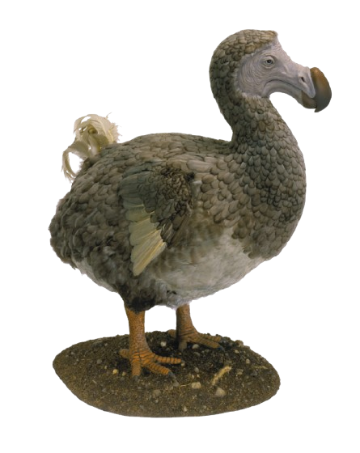

EXTINTO
Dodo
Raphus cucullatus · Isla Mauricio, océano Índicohace ≈ 340 años
¿Cómo era?
Un ave grande y regordeta de cerca de 1 metro de alto. No podía volar, hacía su nido en el suelo y comía frutos y semillas.
¿Por qué se extinguió?
Hacia 1680 ya no quedaban. Los barcos trajeron ratas, cerdos y monos que se comían sus huevos, y las personas también lo cazaron.
Dato curioso
No tenía depredadores en su isla, así que no le tenía miedo a nadie.